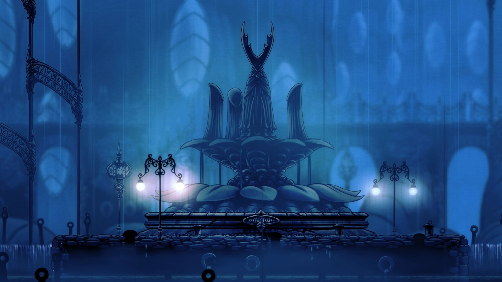

Different locations from Hallownest
The Black Egg Temple, prison of the Hollow Knight
Dirtmouth, the first town.
Deepnest, Dark tunnels full of hazards.
Forgotten Crossroads, the first area underground.
Fog Canyon, a rocky descent with explosive enemies.

Greenpath, a lush area full of hidden danger.

Queen's Garden, Home of the White Lady
Howling Cliffs, desolate land west of Hallownest.
Crystal Peak, Mountain full of gems to the east.
Resting grounds, home to the graves of many soldiers.
Fungal Wastes, crowded passeges full of gas and acid.
City of Tears, Capital of Hallownest.

Kingdom's Edge, barren area with cold winds

Royal Waterways, maze-like tunnels keeping secrets.
Ancient Basin, Location of Hallownests abandoned castle.
The Hive, isolated area full of bees.